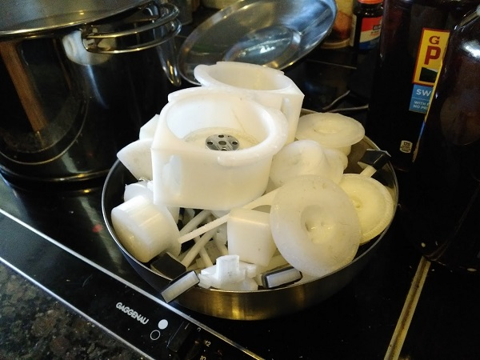
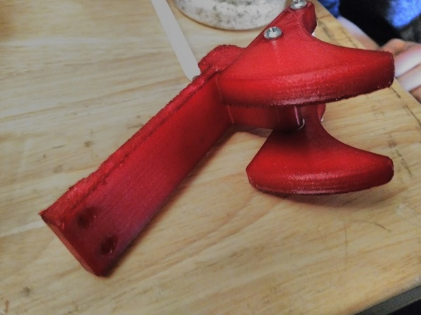

Today, we took every single 3D-printed part off our robot to dye them. We used RIT clothes dye, which worked because our parts are nylon. The purpose of dying all our 3D-printed parts red was so that they would stand out from Tetrix parts while demonstrating the robot. It was a bloodbath. The color was the color of the Nile during the Plagues of Egypt. It seemed as if we were in the bible. But, like the Israelites, we prevailed, and came out with really cool red parts.

Last season, all of the parts on our robot that were 3D-printed were orange, which made us very noticable and memorable. We didn't have anything like that this year, so dyeing all the parts red will hopefully help the judges and other teams remember us at future competition(s). Red is also darker than orange, which means we're more serious. Grr.